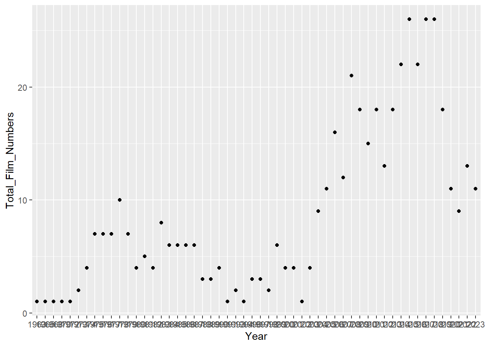

# install.packages("tidyverse")
# install.packages("rvest")
# install.packages("stringr")
# install.packages("ggplot2")imdb_assignment
Packages
Firstly, we have to install our packages.
Secondly, we need to active these packages.
library(tidyverse)Warning: package 'tidyverse' was built under R version 4.3.2Warning: package 'ggplot2' was built under R version 4.3.2Warning: package 'readr' was built under R version 4.3.2Warning: package 'dplyr' was built under R version 4.3.2Warning: package 'stringr' was built under R version 4.3.2── Attaching core tidyverse packages ──────────────────────── tidyverse 2.0.0 ──
✔ dplyr 1.1.4 ✔ readr 2.1.4
✔ forcats 1.0.0 ✔ stringr 1.5.1
✔ ggplot2 3.4.4 ✔ tibble 3.2.1
✔ lubridate 1.9.3 ✔ tidyr 1.3.0
✔ purrr 1.0.2
── Conflicts ────────────────────────────────────────── tidyverse_conflicts() ──
✖ dplyr::filter() masks stats::filter()
✖ dplyr::lag() masks stats::lag()
ℹ Use the conflicted package (<http://conflicted.r-lib.org/>) to force all conflicts to become errors library(rvest)Warning: package 'rvest' was built under R version 4.3.2
Attaching package: 'rvest'
The following object is masked from 'package:readr':
guess_encoding library(stringr)
library(ggplot2)Datas
Links which we will pull data
Assigning links from which we will pull data
link1 <- "https://m.imdb.com/search/title/?title_type=feature&release_date=2010-01-01,2023-12-25&num_votes=2499,&country_of_origin=TR&count=250"
link2 <- "https://m.imdb.com/search/title/?title_type=feature&release_date=,2009-12-31&num_votes=2499,&country_of_origin=TR&count=250"
page1 <- read_html(link1)
page2 <- read_html(link2)Web Wrangling
We must obtain a “data frame” by parsing the characteristic features of the films. Thus, we can perform our exploratory data analysis with the data set we created.
(Since we have two separate links, after performing separate operations for both of them, we put them into a single vector with the c() function.)
For Titles :
titles1 <- page1 %>% html_nodes(".dli-title") %>% html_text()
titles2 <- page2 %>% html_nodes(".dli-title") %>% html_text()
combined_titles <- c(titles1, titles2)
# print(combined_titles)For Years :
years1 <- page1 %>% html_nodes(".dli-title-metadata-item:nth-child(1)") %>% html_text()
years2 <- page2 %>% html_nodes(".dli-title-metadata-item:nth-child(1)") %>% html_text()
combined_years <- c(years1, years2)
# print(combined_years)For Durations :
durations1 <- page1 %>% html_nodes(".dli-title-metadata-item:nth-child(2)") %>% html_text()
durations2 <- page2 %>% html_nodes(".dli-title-metadata-item:nth-child(2)") %>% html_text()
combined_durations <- c(durations1, durations2)
# print(combined_durations)For Ratings :
ratings1 <- page1 %>% html_nodes(".ratingGroup--imdb-rating") %>% html_text()
ratings2 <- page2 %>% html_nodes(".ratingGroup--imdb-rating") %>% html_text()
combined_ratings <- c(ratings1, ratings2)
# print(combined_ratings)For Votes :
votes1 <- page1 %>% html_nodes(".ipc-rating-star--voteCount") %>% html_text()
votes2 <- page2 %>% html_nodes(".ipc-rating-star--voteCount") %>% html_text()
combined_votes <- c(votes1, votes2)
# print(combined_votes)String Processing
We pulled our data from the web. Now we need to make our data suitable for the data frame with string processing.
For Titles :
title_names1 <- page1 %>% html_nodes('.ipc-title__text')
title_names1 <- html_text(title_names1)
title_names1 <- tail(head(title_names1,-1),-1)
title_names1 <- str_split(title_names1, " ", n=2)
title_names1 <- unlist(lapply(title_names1, function(x) {x[2]}))
title_names2 <- page2 %>% html_nodes('.ipc-title__text')
title_names2 <- html_text(title_names2)
title_names2 <- tail(head(title_names2,-1),-1)
title_names2 <- str_split(title_names2, " ", n=2)
title_names2 <- unlist(lapply(title_names2, function(x) {x[2]}))
combined_title_names <- c(title_names1, title_names2)
# print(combined_title_names)For Years :
Since the year data is available, we do not need to do any processing on them.
For Durations :
# For Durations - 1
# Saat ve daikaları ayırıp tanımlıyorum :
hours1 <- as.integer(str_extract(durations1, "\\d+(?=h)")) # For Hours
minutes1 <- as.integer(str_extract(durations1, "\\d+(?=m)")) # For Minutes
hours1[is.na(hours1)] <- as.integer("0") # sadece dakika olan var ise
minutes1[is.na(minutes1)] <- as.integer("0") # sadece saat olan var ise
# Süreleri dakika cinsine dönüştürmek için :
total_duration_minutes1 <- (hours1 * 60) + minutes1
# For Durations - 2
hours2 <- as.integer(str_extract(durations2, "\\d+(?=h)"))
minutes2 <- as.integer(str_extract(durations2, "\\d+(?=m)"))
hours2[is.na(hours2)] <- as.integer("0")
minutes2[is.na(minutes2)] <- as.integer("0")
total_duration_minutes2 <- (hours2 * 60) + minutes2
combined_durations <- c(total_duration_minutes1 , total_duration_minutes2)
# print(combined_durations)For Votes :
votes1 <- page1 %>% html_nodes(".ipc-rating-star--voteCount") %>% html_text()
votes2 <- page2 %>% html_nodes(".ipc-rating-star--voteCount") %>% html_text()
# From ChatGPT :
votes1 <- str_replace_all(votes1, "[()]", "")
votes2 <- str_replace_all(votes2, "[()]", "")
# From ChatGPT :
votes1 <- str_remove_all(votes1, "[^0-9.K]")
votes2 <- str_remove_all(votes2, "[^0-9.K]")
votes_numeric1 <- str_remove_all(votes1, "K") %>% as.numeric() * 1000
votes_numeric2 <- str_remove_all(votes2, "K") %>% as.numeric() * 1000
combined_votes <- c(votes_numeric1 , votes_numeric2)
# print(combined_votes)For Ratings :
# Parantezleri tamamen kaldırma
rating_no_parant1 <- str_replace_all(combined_ratings, "\\(.*\\)", "")
rating_no_parant_no_space <- str_trim(str_extract(rating_no_parant1, "^\\d+\\.?\\d*"))
# Simdi sayıları double tipine çevirelim :
combined_ratings <- as.double(rating_no_parant_no_space)
class(combined_ratings)[1] "numeric"# print(combined_ratings)Creating a Data Frame :
We have completed String Processing. All the data we have obtained now is of a simple and appropriate type suitable for adding to the data frame.
imdb_movies_data <- data.frame(Title = combined_title_names, Year = combined_years, Duration = combined_durations, Rate = combined_ratings, Vote = combined_votes)Upgrade Data Frame
Let’s sort our data set in decreasing order of vote rate.
imdb_movies_data_rate_decreasing <- imdb_movies_data %>%
arrange(desc(Rate))Let’s add a column to our data set showing the average rate by year.
updated_imdb_movies_data <- imdb_movies_data_rate_decreasing %>%
group_by(Year) %>%
mutate(Mean_Rate = mean(Rate))Let’s add a column to our data set showing its rank according to vote rate s:
updated_imdb_movies_data <- imdb_movies_data_rate_decreasing %>%
mutate(Order = row_number())Let’s examine the differences :
head(imdb_movies_data) Title Year Duration Rate Vote
1 Kuru Otlar Üstüne 2023 197 8.1 5100
2 Istanbul Için Son Çagri 2023 91 5.3 7400
3 Yedinci Kogustaki Mucize 2019 132 8.2 54000
4 Ölümlü Dünya 2 2023 117 7.5 3500
5 Bihter 2023 113 3.6 3300
6 Ölümlü Dünya 2018 107 7.6 30000head(updated_imdb_movies_data) Title Year Duration Rate Vote Order
1 Hababam Sinifi 1975 87 9.2 43000 1
2 CM101MMXI Fundamentals 2013 139 9.1 47000 2
3 Tosun Pasa 1976 90 8.9 24000 3
4 Hababam Sinifi Sinifta Kaldi 1975 95 8.9 24000 4
5 Süt Kardesler 1976 80 8.8 21000 5
6 Saban Oglu Saban 1977 90 8.7 19000 6Extras
Let’s find the 5 movies with the highest and lowest scores based on IMDb scores.
imdb_movies_data_rate_decreasing <- imdb_movies_data %>%
arrange(desc(Rate))
# En iyi ve en kotu 5 film :
print("En iyi oy oranına sahip 5 film:")[1] "En iyi oy oranına sahip 5 film:"print(head(imdb_movies_data_rate_decreasing, 5)) Title Year Duration Rate Vote
1 Hababam Sinifi 1975 87 9.2 43000
2 CM101MMXI Fundamentals 2013 139 9.1 47000
3 Tosun Pasa 1976 90 8.9 24000
4 Hababam Sinifi Sinifta Kaldi 1975 95 8.9 24000
5 Süt Kardesler 1976 80 8.8 21000# En alttaki 5 satırı yazdır
print("En kotu oy oranına sahip 5 film:")[1] "En kotu oy oranına sahip 5 film:"print(tail(imdb_movies_data_rate_decreasing, 5)) Title Year Duration Rate Vote
466 Cumali Ceber 2 2018 100 1.2 10000
467 Müjde 2022 48 1.2 9900
468 15/07 Safak Vakti 2021 95 1.2 21000
469 Cumali Ceber: Allah Seni Alsin 2017 100 1.0 39000
470 Reis 2017 108 1.0 74000Let’s examine the imdb data of 4 movies I like.
search_film <- function(name_of_the_film) {
result <- imdb_movies_data_rate_decreasing[imdb_movies_data_rate_decreasing$Title == name_of_the_film, ]
return(result)
}
search_film("Senden Bana Kalan") Title Year Duration Rate Vote
264 Senden Bana Kalan 2015 117 6.5 3400search_film("Aykut Eniste") Title Year Duration Rate Vote
194 Aykut Eniste 2019 115 7 7400search_film("Kolonya Cumhuriyeti") Title Year Duration Rate Vote
351 Kolonya Cumhuriyeti 2017 110 5.8 5400search_film("Recep Ivedik 2") Title Year Duration Rate Vote
417 Recep Ivedik 2 2009 107 4.5 22000PLOTS
updated_imdb_movies_data <- imdb_movies_data %>%
group_by(Year) %>%
mutate(Mean_Rate = mean(Rate), Total_Film_Numbers = n())MEAN RATE
plot_mean_rate_per_year_col <- updated_imdb_movies_data %>%
ggplot(aes(x = Year, y = Mean_Rate)) +
geom_col()
print(plot_mean_rate_per_year_col)plot_mean_rate_per_year_point <- updated_imdb_movies_data %>%
ggplot(aes(x = Year, y = Mean_Rate)) +
geom_point()
print(plot_mean_rate_per_year_point)RATE
plot_rate_per_year_box <- updated_imdb_movies_data %>%
ggplot(aes(x = Year, y = Rate)) +
geom_boxplot()
print(plot_rate_per_year_box)FILM NUMBER
plot_total_film_number_per_year_point <- updated_imdb_movies_data %>%
ggplot(aes(x = Year, y = Total_Film_Numbers)) +
geom_point()
print(plot_total_film_number_per_year_point)